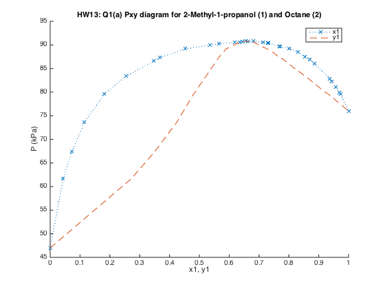
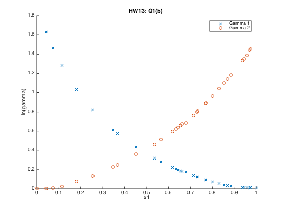
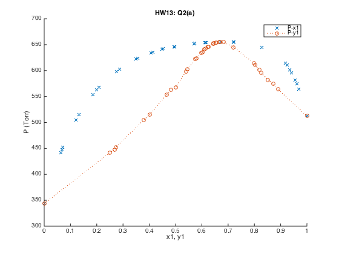
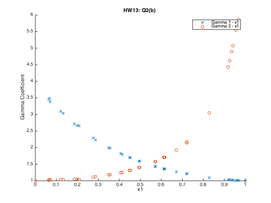

Contents
clc, close all, clear all plotType = 'xo';
Question 1
Import CSV data
M = csvread('num1.csv', 1); P = M(:, 1); x1 = M(:, 2); y1 = M(:, 3); figure, hold all, plot(x1, P, 'x:'), plot(y1, P, '--') title('HW13: Q1(a) Pxy diagram for 2-Methyl-1-propanol (1) and Octane (2)') xlabel('x1, y1'), ylabel('P (kPa)') legend('x1', 'y1') % Part 2: where 2-Methyl-1-propanol (1) and Octane (2) % Find the saturated pressures based on the Antione Equation Psat = []; T = 373.15; % K A = [6.49183, 6.04394]; B = [1270.273, 1351.938]; C = [-97.885, -64.030]; for n = 1:2 Psat(n) = 10^(A(n)-B(n)/(T+C(n))); disp(['Psat' num2str(n) ' = ' num2str(Psat(n))]) end % Find x2 and y2 based off of x1 and y1, where x1 + x2 = 1 x(:, 1) = x1; x(:, 2) = 1 - x(:, 1); y(:, 1) = y1; y(:, 2) = 1 - y(:, 1); % Solve for gamma from Modified Raoult's Law: % gamma(i) = (y(i)*P(i))/(x(i)*Psat(i)) figure, hold all for i = 1:2 gammaVal(:,i) = (y(:, i).*P)./(x(:, i).*Psat(i)); plot(x(:, 1), reallog(gammaVal(:, i)), plotType(i)) end title('HW13: Q1(b) ') xlabel('x1'), ylabel('ln(gamma)') legend('Gamma 1', 'Gamma 2') % Export list of values for grader T1 = table(gammaVal(:,1), gammaVal(:,2), 'VariableNames',{'Gamma1', 'Gamma2'})
Psat1 = 75.3533
Psat2 = 46.8203
T1 =
Gamma1 Gamma2
______ ______
NaN 1.0036
5.0986 1.0026
4.3221 1.0083
3.6012 1.0231
2.7971 1.0787
2.275 1.1407
1.8426 1.2553
1.7767 1.2851
1.5379 1.4302
1.3746 1.5868
1.3207 1.6701
1.2475 1.8137
1.2287 1.8621
1.2173 1.8957
1.2078 1.9326
1.1962 1.9607
1.1916 1.9847
1.1475 2.1505
1.1322 2.2213
1.1289 2.2449
1.095 2.4225
1.0937 2.44
1.0725 2.6261
1.0546 2.8326
1.0409 2.998
1.036 3.1263
1.0284 3.2603
1.0154 3.7997
1.0143 3.8529
1.012 4.0134
1.0104 4.22
1.0118 4.2612
1.0084 NaN
  Question 2
clear all plotType = 'xo'; % Import CSV data M = csvread('num2.csv', 1); x = M(:, 1); P = M(:, 2:3); % Assume ideal gas % P1 + P2 = (y1 + y2)*P Ptot = P(:, 1) + P(:, 2); figure, hold all for i = 1:2 y(:, i) = P(:, i)./Ptot; end plot(x(:, 1), Ptot, 'x'), plot(y(:, 1), Ptot, 'o:') title('HW13: Q2(a) ') xlabel('x1, y1'), ylabel('P (Torr)') legend('P-x1', 'P-y1') % Find x2 based off of x1, where x1 + x2 = 1 x(:, 2) = 1 - x(:, 1); % Solve for gamma from Modified Raoult’s Law: % gamma(i) = (y(i)*P(i))/(x(i)*Psat(i)) figure, hold all Psat = [P(length(x), 1), P(1, 2)]; for i = 1:2 disp(['Psat' num2str(i) ' = ' num2str(Psat(i))]) gammaVal(:,i) = (y(:, i).*Ptot)./(x(:, i).*Psat(i)); plot(x(:, 1), gammaVal(:, i), plotType(i)) end title('HW13: Q2(b) ') xlabel('x1'), ylabel('Gamma Coefficient') legend('Gamma 1 - x1', 'Gamma 2 - x1') % Export list of values for grader T2 = table(y(:, 1), Ptot, gammaVal(:,1), gammaVal(:,2), 'VariableNames',{'y1', 'Ptotal', 'Gamma1', 'Gamma2'})
Psat1 = 512.3
Psat2 = 343.8
T2 =
y1 Ptotal Gamma1 Gamma2
_______ ______ ______ ______
0 343.8 NaN 1
0.25062 441.7 3.4629 1.0268
0.26749 447.5 3.4873 1.0219
0.27241 451.9 3.3796 1.0296
0.37945 505.2 3.0874 1.0376
0.40113 514.8 3.0307 1.0343
0.46659 553.8 2.7162 1.0552
0.48338 562.5 2.6657 1.0554
0.50044 567.3 2.6579 1.0415
0.54018 598.5 2.2857 1.1058
0.5452 602.9 2.2364 1.1184
0.57586 622.2 1.9971 1.1813
0.57956 623.4 1.9861 1.1821
0.59864 634.1 1.826 1.2458
0.60164 635.1 1.8011 1.256
0.60943 640.6 1.7033 1.317
0.61421 641.8 1.6986 1.3166
0.62415 646 1.5955 1.3938
0.62535 646.2 1.5858 1.4011
0.64325 652 1.4357 1.5741
0.64414 652.5 1.4318 1.5817
0.65285 653.9 1.3607 1.7035
0.65438 653.6 1.3584 1.7049
0.65499 653.6 1.3563 1.7085
0.6687 655 1.2736 1.9202
0.66774 654.9 1.2716 1.9255
0.68271 654.6 1.2082 2.1731
0.68362 654.6 1.2137 2.1491
0.72066 645.1 1.096 3.0473
0.79906 614.1 1.0421 4.4367
0.80288 610.3 1.0349 4.6163
0.81806 601.3 1.0269 4.8955
0.8262 595.5 1.0209 5.0767
0.85243 582.1 1.0143 5.54
0.87217 574.2 1.0162 5.6183
0.89007 564 1.011 5.8551
1 512.3 1 NaN
 